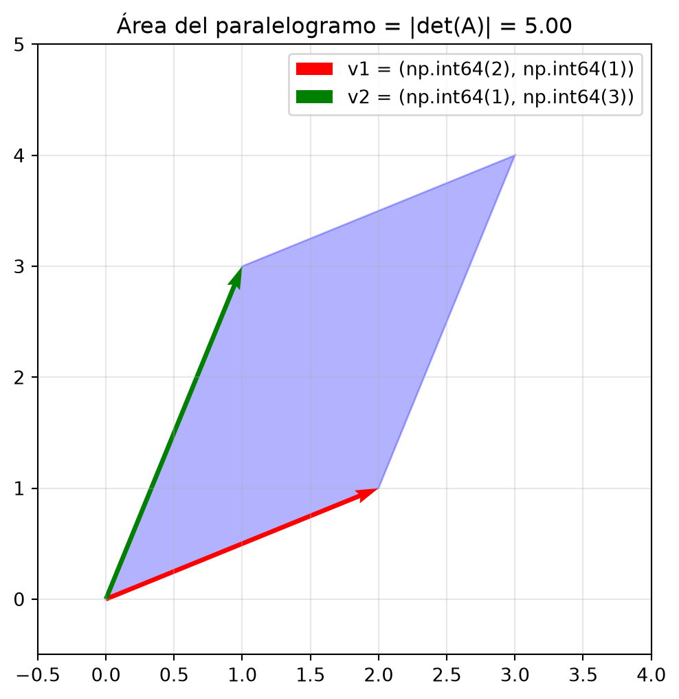

Verificación en Python: 9.9999999999999982.1 Determinantes: El factor de escala del espacio
2.1.1 Estructura teórica matemática
Qué aprenderá aquí. Que el determinante no es solo una fórmula para saber si una matriz tiene inversa, sino una medida geométrica: cuánto estira o encoge una matriz el espacio. Veremos su definición formal inductiva y su interpretación como área y volumen.
Definition 1 (Operación determinante) Sea \(\mathcal{M}_{n \times n}\) el conjunto de todas las matrices cuadradas de tamaño \(n \times n\) con entradas reales. El determinante es una función que asigna a cada matriz \(A \in \mathcal{M}_{n \times n}\) un número real único, denotado por \(\det(A)\) o \(|A|\):
\[|\cdot| : \mathcal{M}_{n \times n} \to \mathbb{R}\] \[A \mapsto \det(A)\]
Esta operación se construye de manera inductiva: primero se define para matrices de \(2 \times 2\) y, a partir de ahí, para matrices de mayor tamaño.
Definition 2 (Determinante de \(2 \times 2\)) Para una matriz \(A = \begin{pmatrix} a & b \\ c & d \end{pmatrix}\), su determinante se define como:
\[ \det(A) = |A| = ad - bc \]
Example 1 (Matriz de \(2 \times 2\)) Considere la matriz
\[ A = \begin{pmatrix} 3 & 5 \\ -1 & 2 \end{pmatrix} \]
Aquí, sus entradas son \(a_{11} = 3\), \(a_{12} = 5\), \(a_{21} = -1\) y \(a_{22} = 2\)
Así que el \(|A| = a_{11}a_{22}-a_{21}a_{12}=3\cdot 2 - (-1)\cdot 5 = 11\).
Definition 3 (Menores y Cofactores) Sea \(A\) una matriz de \(n \times n\). El menor \(M_{ij}\) es la matriz de \((n-1) \times (n-1)\) que resulta de eliminar la fila \(i\) y la columna \(j\) de \(A\). El cofactor \(C_{ij}\) es un número real, que se obtiene como:
\[ C_{ij} = (-1)^{i+j} \det(M_{ij}) \]
El signo \((-1)^{i+j}\) crea una secuencia de signos positivos y negativos.
Aquí tiene el ejemplo de un cofactor para una matriz de \(3 \times 3\):
Example 2 (Cálculo de un cofactor en una matriz de \(3 \times 3\)) Considere la matriz \[ A = \begin{pmatrix} 2 & 3 & 1 \\ 4 & 1 & -2 \\ 0 & 5 & 3 \end{pmatrix} \]
Para calcular el cofactor \(C_{12}\), primero calculamos el menor \(M_{12}\), eliminando la fial \(1\) y la columna \(2\)
\[ A = \begin{pmatrix} \xcancel{2} & \xcancel{3} & \xcancel{1} \\ 4 & \xcancel{1} & -2 \\ 0 & \xcancel{5} & 3 \end{pmatrix} \]
Obteniendo el menor:
\[ M_{12} = \begin{pmatrix} 4 & -2 \\ 0 & 3 \end{pmatrix} \]
Luego, calculamos el determinante de este menor y lo multiplicamos por el signo \((-1)^{1+2}\):
\[ \det(M_{12}) = (4)(3) - (-2)(0) = 12 \]
Así que el cofactor es \(C_{12} = (-1)^{1+2} \det(M_{12}) = -1 \cdot 12 = -12\).
Definition 4 (Determinante \(n \times n\)) El determinante de una matriz \(A\) de \(n \times n\) se calcula mediante la expansión por cofactores a lo largo de cualquier fila \(i\) o columna \(j\):
\[ \det(A) = \sum_{k=1}^n a_{ik} C_{ik} = a_{i1}C_{i1} + a_{i2}C_{i2} + \dots + a_{in}C_{in} \]
Theorem 1 (Determinante de matrices triangulares) Si \(A\) es una matriz triangular superior, inferior o diagonal, su determinante es el producto de las entradas de su diagonal principal:
\[ \det(A) = a_{11} \cdot a_{22} \dots a_{nn} \]
Example 3 (Cálculo por cofactores en \(3 \times 3\)) Calcule el determinante de \(A = \begin{pmatrix} 2 & 3 & 1 \\ 4 & 1 & -2 \\ 0 & 5 & 3 \end{pmatrix}\) expandiendo por la primera fila.
Solución: Usamos la fórmula \(\det(A) = a_{11}C_{11} + a_{12}C_{12} + a_{13}C_{13}\).
\[ \det(A) = 2 \begin{vmatrix} 1 & -2 \\ 5 & 3 \end{vmatrix} - 3 \begin{vmatrix} 4 & -2 \\ 0 & 3 \end{vmatrix} + 1 \begin{vmatrix} 4 & 1 \\ 0 & 5 \end{vmatrix} \] \[ \det(A) = 2(3 - (-10)) - 3(12 - 0) + 1(20 - 0) = 2(13) - 3(12) + 20 = 26 - 36 + 20 = 10 \]
NOTA: Observe que se puede resolver por cualquier fila o columna, por favor resuelva el determinante por todas las filas y por todas las columnas, obviamente el resultado debe ser el mismo, además observe que cada vez que la suma \(1+j\) es par, el signo que lleva el cofactor, es positivo, mientras que si \(i+j\) es impar, irá precedido de un signo negativo.
2.1.2 Sección de análisis y Ventana IA
Geométricamente, las columnas de una matriz \(2 \times 2\) definen dos vectores. El valor absoluto del determinante es el área del paralelogramo que forman. En \(3 \times 3\), es el volumen del paralelepípedo.
Si el determinante es \(0\), el área (o volumen) es cero: ¡la matriz aplastó el espacio sobre una línea o un punto! Por eso no tiene inversa: no se puede “des-aplastar” una dimensión perdida.
ImportantVentana IA: El Jacobiano y el colapso de la información
En las redes neuronales profundas, cada capa aplica una transformación lineal \(W\mathbf{x}\). Si en alguna capa la matriz de pesos \(W\) tiene un determinante cercano a cero, la transformación está “aplastando” el espacio de características (features).
En IA generativa y modelos de flujo (Normalizing Flows), se usa el determinante Jacobiano para medir cómo cambia el volumen de probabilidad al transformar los datos. Calcular el determinante de matrices gigantes es costoso, por lo que las arquitecturas modernas diseñan matrices donde el determinante es trivial de calcular (matrices triangulares o de bajo rango).
Regla de oro en IA: \(|\det(W)| < 1\) comprime información; \(|\det(W)| > 1\) la expande. Un \(\det \approx 0\) provoca el temido problema de “gradientes desvanecientes” (vanishing gradients).
2.1.4 Ejercicios demostrativos
Theorem 2 (Propiedades fundamentales) Para cualesquiera matrices \(A, B\) de \(n \times n\): 1. \(\det(AB) = \det(A)\det(B)\) 2. \(\det(A^T) = \det(A)\) 3. Si \(A\) tiene una fila (o columna) de ceros, o dos filas idénticas, \(\det(A) = 0\).
Proof. Demostración del inciso 3 (Filas idénticas): Supongamos que la matriz \(A\) tiene las filas \(i\) y \(j\) idénticas. Si intercambiamos la fila \(i\) con la fila \(j\), la matriz no cambia (es la misma \(A\)). Por la propiedad de intercambio (que invierte el signo del determinante), tenemos:
\[ \det(A) = -\det(A) \]
Sumando \(\det(A)\) a ambos lados:
\[ 2\det(A) = 0 \implies \det(A) = 0 \] \(\blacksquare\)
2.1.5 Aplicaciones por carrera
NoteAplicación · Agronomía: Área real de un lote irregular
Un ingeniero agrónomo mapea un lote de terreno usando un dron. Las coordenadas de las esquinas de una sección triangular, medidas desde un origen, están dadas por los vectores de posición \(\mathbf{u} = (150, 200)\) m y \(\mathbf{v} = (300, 50)\) m. El área del triángulo formado por el origen y estos puntos es la mitad del área del paralelogramo que definen.
Calculamos el determinante de la matriz formada por estos vectores:
\[ A = \begin{pmatrix} 150 & 300 \\ 200 & 50 \end{pmatrix} \implies \det(A) = (150)(50) - (300)(200) = 7500 - 60000 = -52500 \]
El área del paralelogramo es \(|\det(A)| = 52500\) m\(^2\). El área del lote triangular es la mitad: \(26250\) m\(^2\) (aprox. 2.6 hectáreas). El signo negativo solo indica la orientación (horaria) del trazado.
NoteAplicación · Mecatrónica: Volumen del espacio de trabajo de un robot
Un brazo robótico en 3D puede alcanzar un punto final. La matriz de transformación de sus articulaciones tiene una submatriz de rotación \(R\) de \(3 \times 3\). Si el volumen de trabajo permitido es una caja unitaria de \(1\) m\(^3\), el volumen real alcanzable tras la transformación es exactamente \(|\det(R)|\). Como las matrices de rotación pura son ortogonales, \(\det(R) = 1\), lo que confirma que el robot rota el espacio pero no lo comprime ni lo expande.
2.1.6 Módulo Python y visualización
import numpy as np
import matplotlib.pyplot as plt
# Vectores que definen un paralelogramo
v1 = np.array([2, 1])
v2 = np.array([1, 3])
# Matriz A cuyas columnas son v1 y v2
A = np.column_stack([v1, v2])
det_A = np.linalg.det(A)
fig, ax = plt.subplots(figsize=(6, 6))
# Dibujo del paralelogramo
origin = np.array([0, 0])
parallelogram = plt.Polygon([origin, v1, v1+v2, v2], color='blue', alpha=0.3)
ax.add_patch(parallelogram)
# Flechas
ax.quiver(*origin, *v1, angles='xy', scale_units='xy', scale=1, color='r', label=f'v1 = {tuple(v1)}')
ax.quiver(*origin, *v2, angles='xy', scale_units='xy', scale=1, color='g', label=f'v2 = {tuple(v2)}')
ax.set_xlim(-0.5, 4)
ax.set_ylim(-0.5, 5)
ax.grid(alpha=0.3)
ax.set_title(f"Área del paralelogramo = |det(A)| = {abs(det_A):.2f}")
plt.legend()
plt.show()